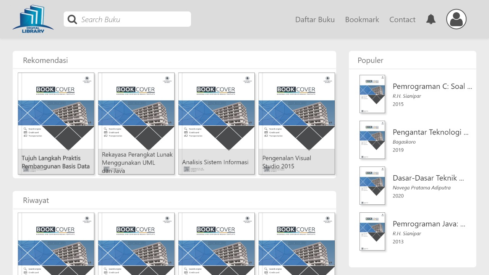

Perpustakaan Digital Persentasi Framework
Created Zoker Team
Deskripsi Aplikasi
Perpustakaan digital merupakan penerapan teknologi yang memanfaatkan informasi sebagai sarana untuk menyimpan, mendapatkan dan menyebarluaskan informasi ilmu pengetahuan dalam format digital. Perpustakaan digital dapat dianalogikan sebagai tempat menyimpan koleksi perpustakaan yang sudah dalam bentuk digital. Perpustakaan digital memiliki tempat penyimpanan tidak hanya terbatas pada format tertentu dan kemampuan dalam menyediakan akses informasi tanpa adanya batasan ruang dan waktu.
Manfaat Aplikasi
- Efisiensi Dalam Hal Tenaga Dan Waktu
- Akses Seluruh Koleksi Buku 24 Jam Penuh
- Memudahkan Pencarian Buku Berdasar Judul, Penulis, Dan ISBN
- Mendapatkan Rekomendasi Buku Untuk Dibaca
- Proses Peminjaman Dan Pengembalian Buku Yang Mudah
- Informasi Ketersediaan Buku Dalam Perpustakaan
- Hemat Biaya Dengan Dokumentasi Digital
- Pengelolaan Koleksi Buku Lebih Terorganisir Dengan Sistem Monitoring
Design Home
Sebagai halaman beranda aplikasi. terdapat textbox pencarian dan list buku dan juga menu menu yaitu Daftar Buku, Bookmark, Contact.
